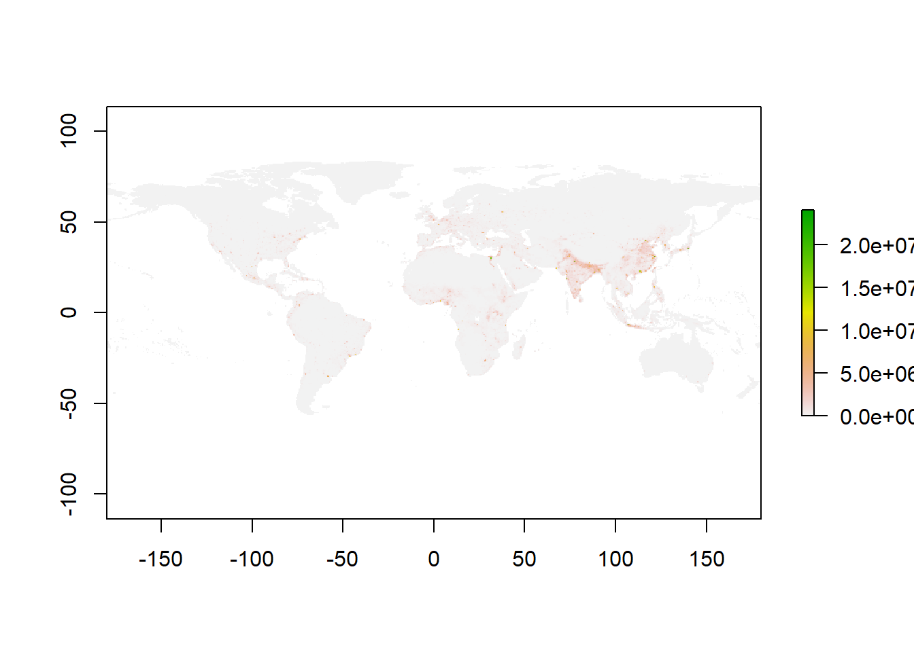
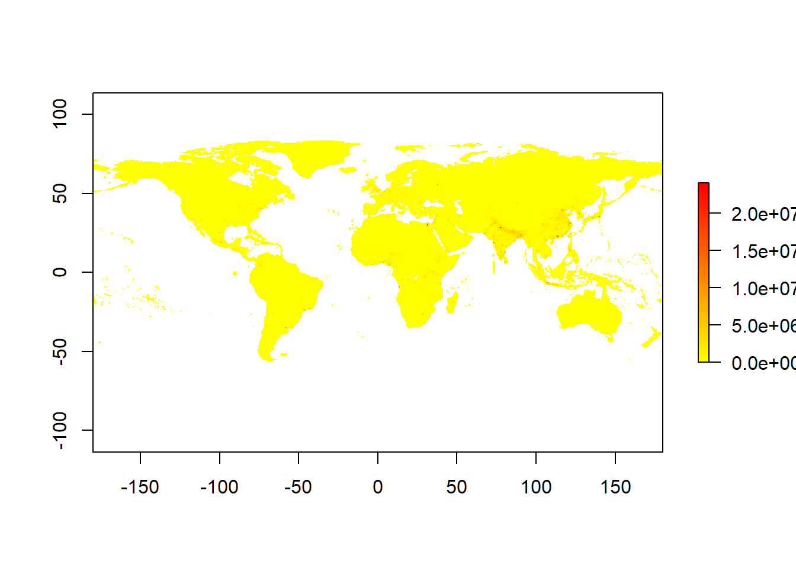
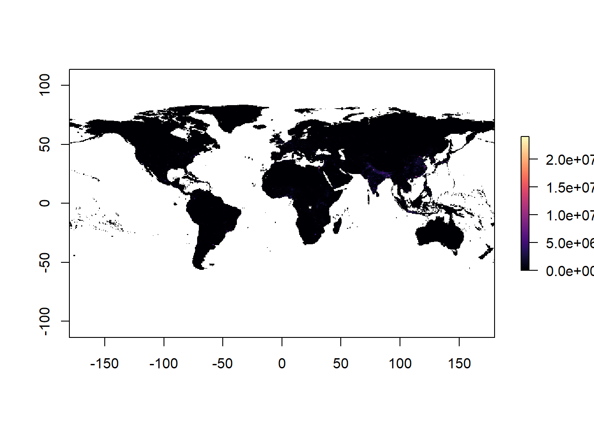
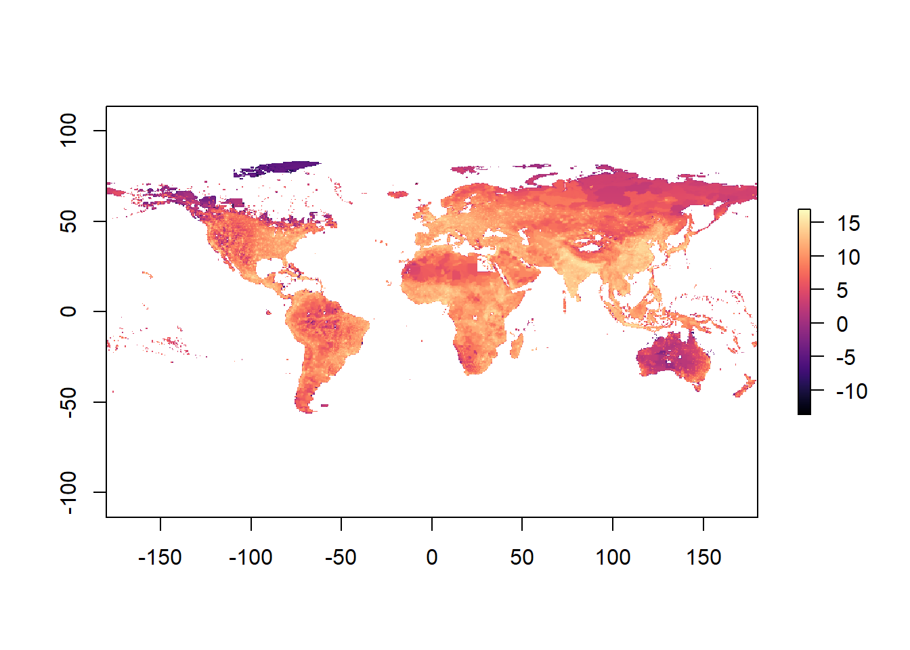
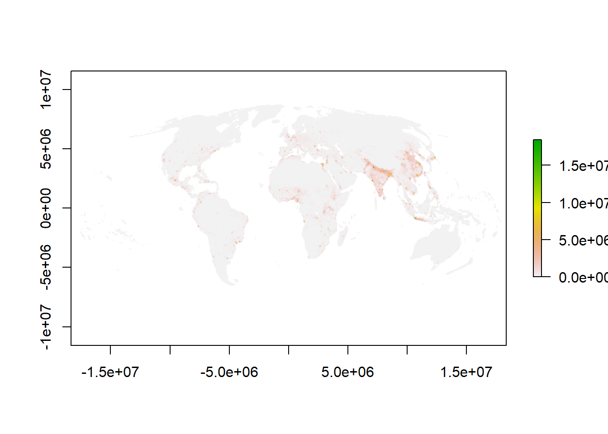
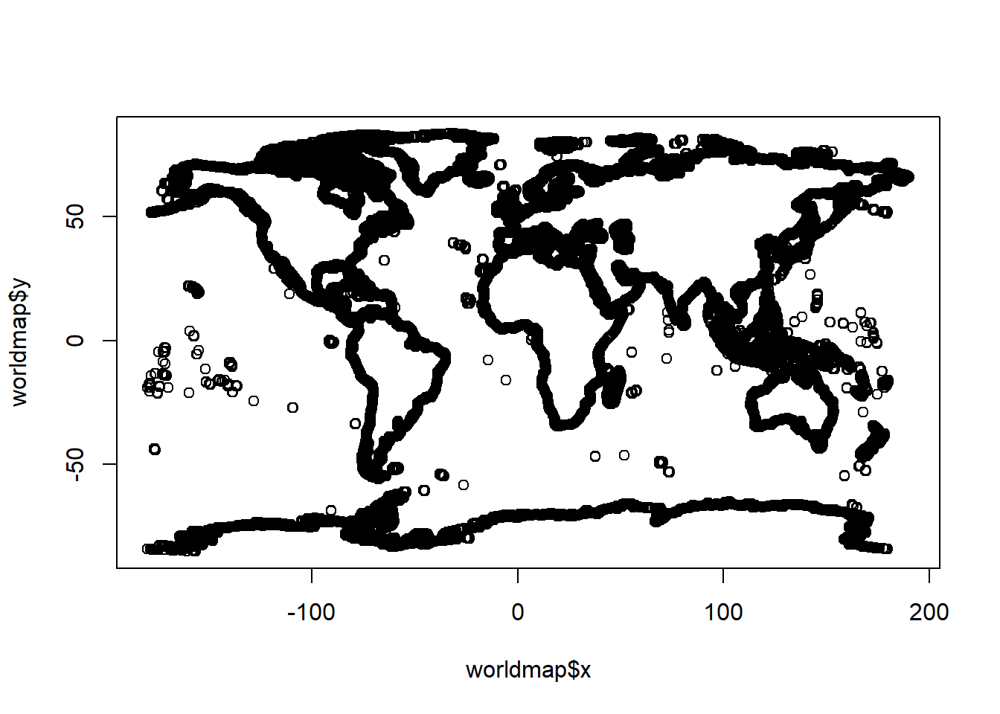
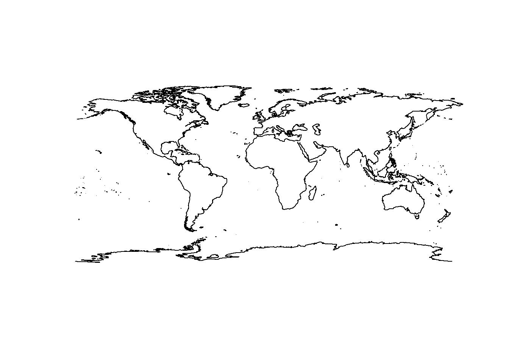
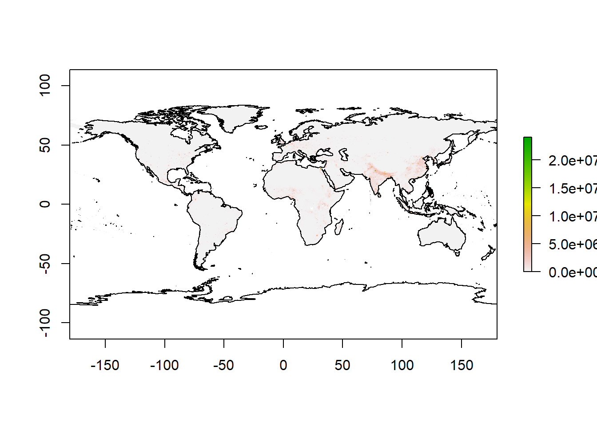

Plotting maps
R also provides powerful tools to analyze geographical data. Pretty much anything you can do in ARCgis, you can do in R; the key difference is that in R is free!.
Let’s see how to plot a map in R. Lets start by getting some spatial data.
I collected the global data on human population from here. That page is full of other types of global scale data you may find interesting.
Here we will use the package raster for the purpose of loading and plotting the map.
library (raster)
GlobalPopulation=raster("https://raw.githubusercontent.com/Camilo-Mora/GEO380/main/Datasets/GlobalHumanPopulation2020.tif") #load the raster.In the code above, I create a variable called GlobalPopulation that has the global data on human population.
Note that to load the data of the raster, you use the same method you used before to load the .csv file. That is, using the path to the file, preceded by the command that reads the file.
In this case, you use the command raster to read the file rather than read.csv. as the data you want to load is a raster and not a csv file.
To plot the raster, all you have to do is to plot that variable, like this:

You can use a different color scale using the RColorBrewer library. Lets try,
library(RColorBrewer) #this library allows you to create your own scales
#Lets create a color scale between yellow and red colors
ColorScale <- colorRampPalette(c("yellow","red"))
plot(GlobalPopulation,col =ColorScale(100)) #plot human population with 100 color in my scale
There are also premade color blind friendly scales. The most commonly used is called viridis. Here are the different options of scales it has to offer:

Figure 4.4: Viridis color scales
Lets now plot our map, using the magma scale
library(viridis)
plot(GlobalPopulation,col =magma(1000)) #plot human population with 100 color in my scale
Hmm, not to pretty ah?. why do you think the map does not look that good?Well, the reason is that there are some places in the world with soo many people that makes the rest of the world look by comparison like if the world was empty. Here the problem is the scale of comparison.
In cases where the extremes of the data are to far a part, it is recommended to log transform your data, which brings some of those extremes closer. Let’s see what log-transforming does,

Now you can better appreciate the patterns of variation, but you need to be mindful that the data are logarithmic.
R also allows to reproject the data into different projection types. You should be aware that there are many issues with displaying maps in different projections, that is topic for another course.
Raster <- projectRaster(GlobalPopulation, crs='+proj=moll', over=T) #reproject raster to mollweide projection
plot(Raster) 
Hmm that raster of the world’s population is missing an outline of the world. For that, there is a package called maps. Let’s try.
library(maps) # this library offers several choices for background maps
worldmap <- map("world", plot=F,interior = F) #create map of the world
plot(worldmap) #check the map
Hmm that packages provides the outline of the world as points. But really we want lines. Ok, we can use the maptools to convert points to lines
## Please note that 'maptools' will be retired during October 2023,
## plan transition at your earliest convenience (see
## https://r-spatial.org/r/2023/05/15/evolution4.html and earlier blogs
## for guidance);some functionality will be moved to 'sp'.
## Checking rgeos availability: FALSE##
## Attaching package: 'maptools'## The following object is masked from 'package:sp':
##
## sp2MondrianworldmapLines <- map2SpatialLines(worldmap, proj4string=CRS("+proj=longlat +datum=WGS84"))
plot( worldmapLines) #check the map
Great, now you have a raster of the world’s human population and an outline of the world. Let’s put them together
plot(GlobalPopulation) #first plot your raster
plot(worldmapLines,add=T) #then add the outline of the world on top.